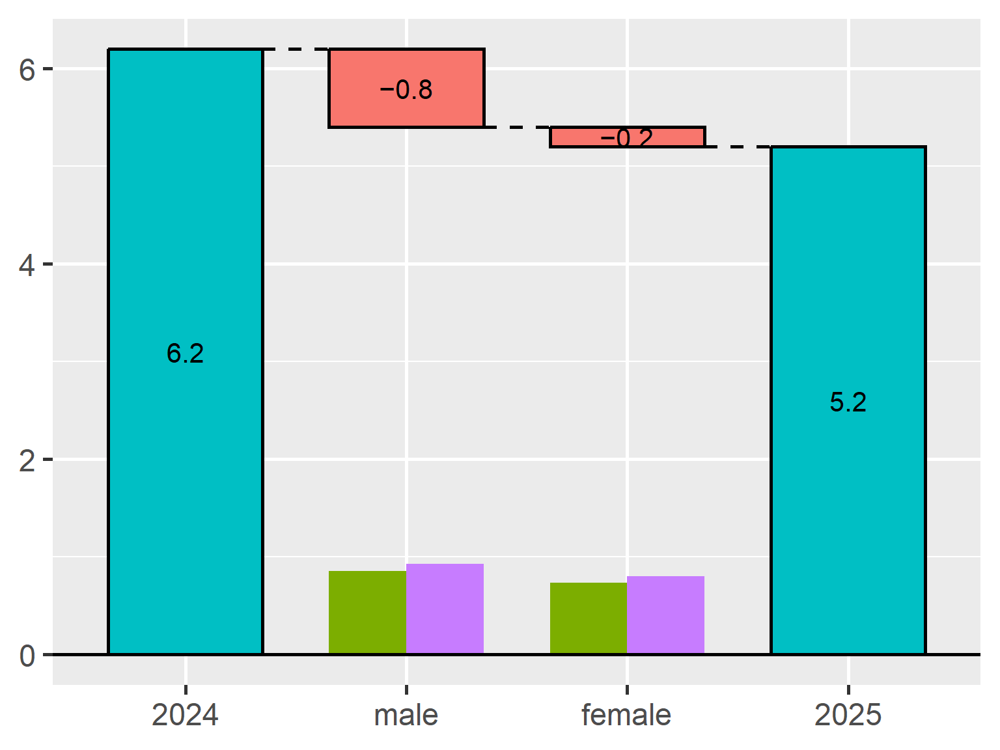
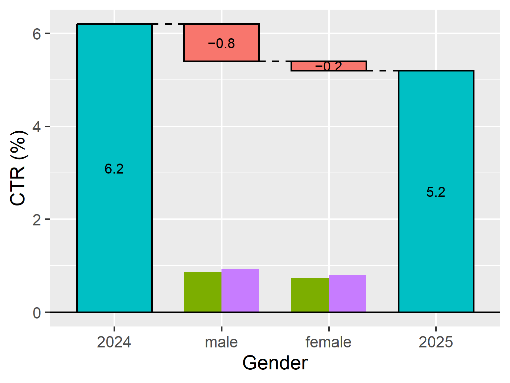
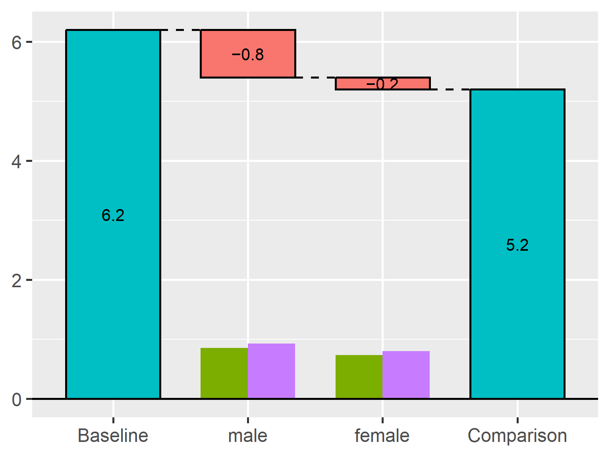
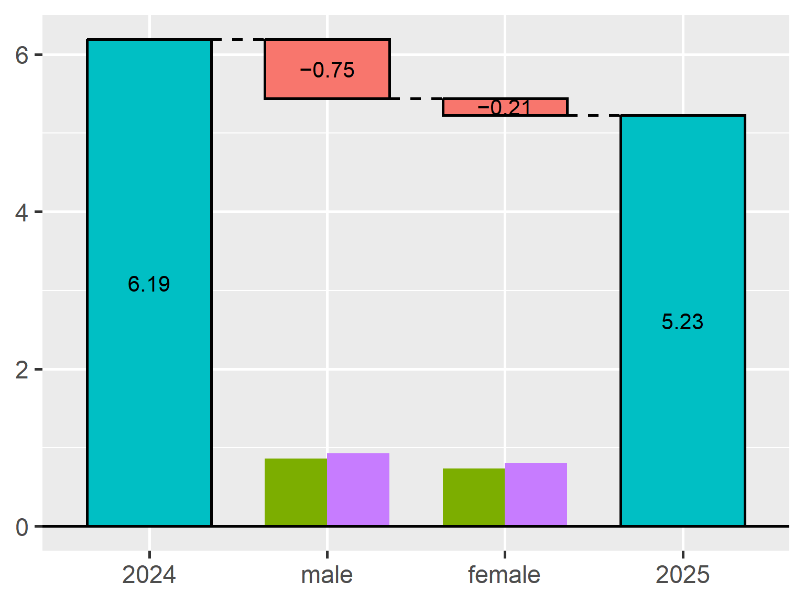
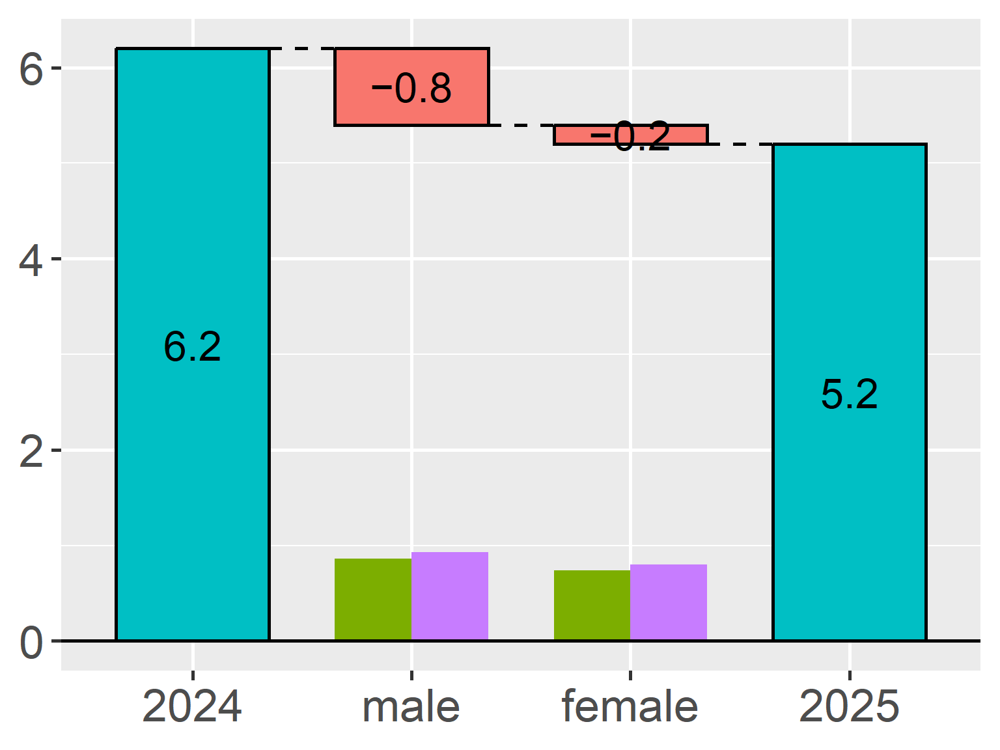

TheseusPlot is an R package that decomposes differences in a rate metric between two groups into subgroup-level contributions and visualizes the results as a “Theseus Plot”.
For example, when a click-through rate, conversion rate, or retention rate differs between two time periods or groups, TheseusPlot helps answer questions such as: which subgroup contributed most to the difference?
Suppose that the click-through rate (CTR) was 6.2% in 2024 and 5.2% in 2025, a decrease of 1.0 percentage point. A Theseus Plot can show how this decrease is decomposed: in this example, 0.8 percentage points are assigned to male users and 0.2 percentage points to female users under the decomposition.
Version 0.3.0 is now available on CRAN. This release fixes a compatibility issue with waterfalls 1.1.4, improves subgroup size bar rendering, and refines several plot defaults.
What’s new in 0.3.0
Cleaner plot labels
In earlier versions, TheseusPlot automatically displayed the analyzed column name as a subtitle. However, this was not always useful, especially when the plot was already used in a document or presentation where the context was clear.
In version 0.3.0, the automatic column-name subtitle has been removed. This makes the resulting plots cleaner and easier to combine with custom titles, captions, and surrounding text.
This release also adds an xlab argument to create_ship(), so you can customize the x-axis label used by plot() and plot_flip().
For example:
ship <- create_ship(
data_2024,
data_2025,
y = clicked,
labels = c("2024", "2025"),
xlab = "Gender",
ylab = "CTR (%)"
)
ship$plot(gender)
This is useful when the column name in the data is short or technical, but you want a more readable label in the plot.
Better default labels
The default group labels have been changed from "Original" and "Refitted" to "Baseline" and "Comparison".
ship <- create_ship(
data_2024,
data_2025,
y = clicked
)
ship$plot(gender)
The previous labels reflected the internal idea of replacing one group with another, but they were not always intuitive for users. The new defaults better match common comparison scenarios, such as year-over-year comparisons, control versus treatment, and before-and-after analyses.
Of course, you can still specify your own labels:
ship <- create_ship(
data_Nov,
data_Dec,
y = on_time,
labels = c("November", "December")
)Simpler numeric display
The default number of displayed decimal places has been changed from 3 to 1.
In many plots, three decimal places made the labels more detailed than necessary. Since TheseusPlot is mainly intended to help users understand the structure of a metric difference, one decimal place is often enough for visual interpretation.
You can still control the precision with the digits argument when needed.
ship <- create_ship(
data_2024,
data_2025,
y = clicked,
labels = c("2024", "2025"),
digits = 2
)
ship$plot(gender)
Plot improvements and bug fixes
Version 0.3.0 also includes several improvements and bug fixes related to plot rendering.
First, missing subgroup size bars in plot() and plot_flip() with waterfalls 1.1.4 have been fixed. Subgroup size bars are an important part of Theseus Plots because they show the sample size of each subgroup in both groups. Without them, it becomes harder to judge whether a large contribution comes from a large subgroup, a large rate difference, or both.
Second, subgroup size bar scaling has been improved. Bar heights are now computed consistently from the maximum plot score in both plot() and plot_flip(). This makes visual comparisons more stable across plot directions. The maximum height of these bars can still be controlled with the bar_max_value argument.
Third, text_size handling has been fixed when applying the current ggplot2 theme. This makes text scaling more predictable when users customize plot themes.
ship <- create_ship(
data_2024,
data_2025,
y = clicked,
labels = c("2024", "2025"),
text_size = 1.5
)
ship$plot(gender)
Installation
You can install TheseusPlot from CRAN with:
install.packages("TheseusPlot")Try it out
TheseusPlot is useful when you want to understand why rate metrics differ between two groups.
Typical examples include:
- click-through rate
- conversion rate
- retention rate
- success rate
- error rate
For details, please see the package website: